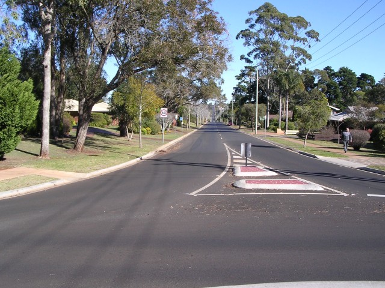
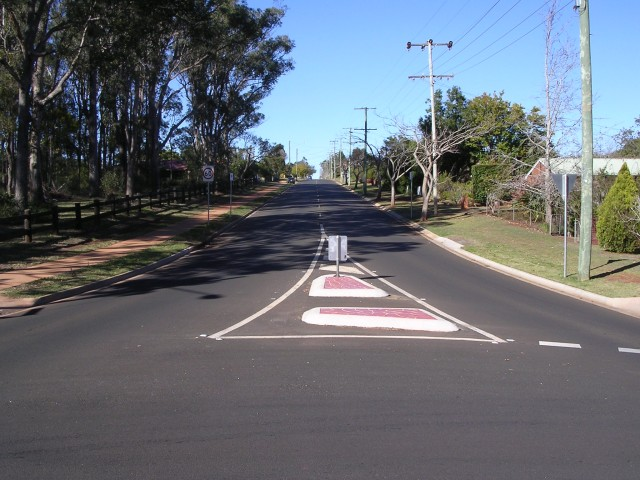
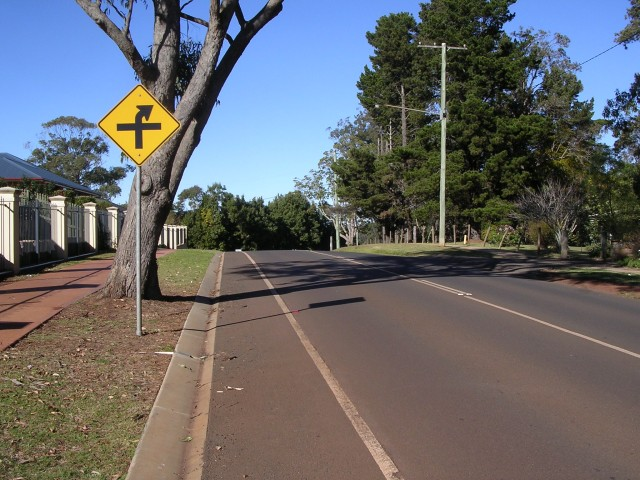
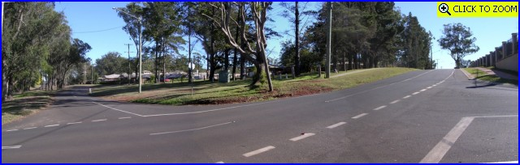
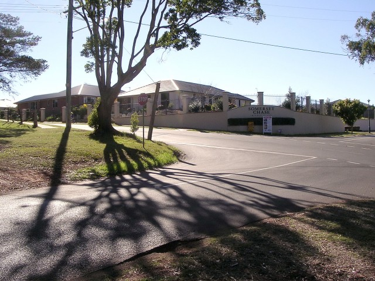
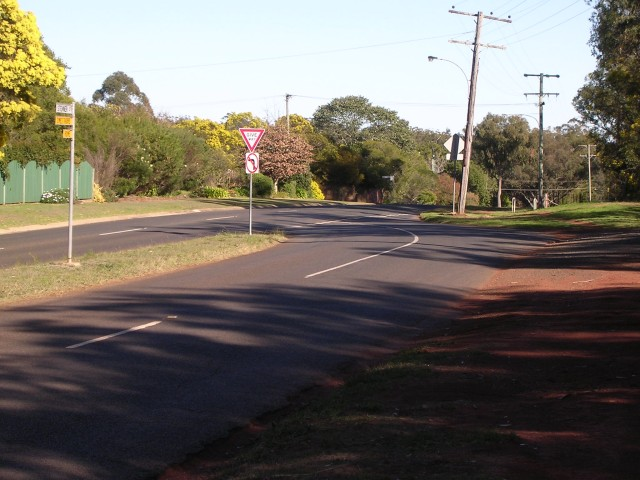
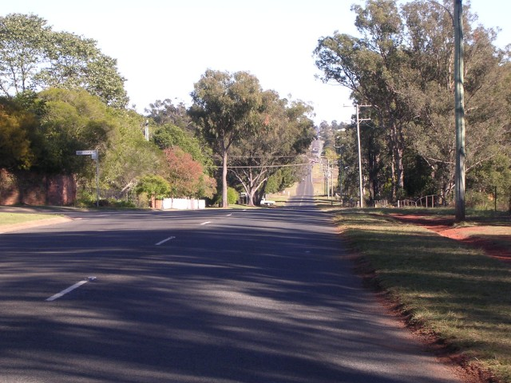

Numbers on the map represent the location where the photographs were taken. Scroll down to view the photographs.
Middle Ridge - Morgan Motors Straight to Tempo Wiggle
|| Contents || Redman's Straight to Hillman Corner | Morgan Motors Straight to Tempo Wiggle || Home ||
Numbers on the map represent the location where the photographs were taken. Scroll
down to view the photographs.
Return to racingcircuits.net's Photo Archive Main Index

09 - Looking back down the Morgan Motors Straight at Humber Corner.

10 - Tempo Straight at Humber Corner.

11 - Crest on Tempo Straight just before Gazelle Corner.

12 - Gazelle Corner. [Click
here to zoom in]

13 - Looking back to the entry of Gazelle Corner.

14 - Tempo Wiggle.

15 - Stenner Street.
Photographs and Text ©Neil Fackerell. Reproduced here with kind permission.